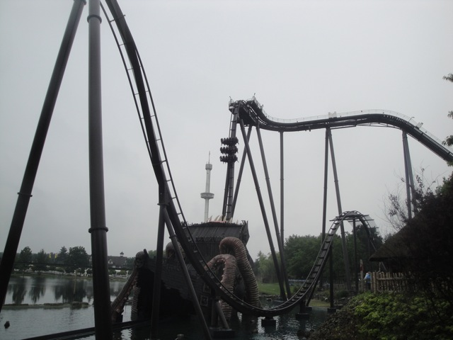
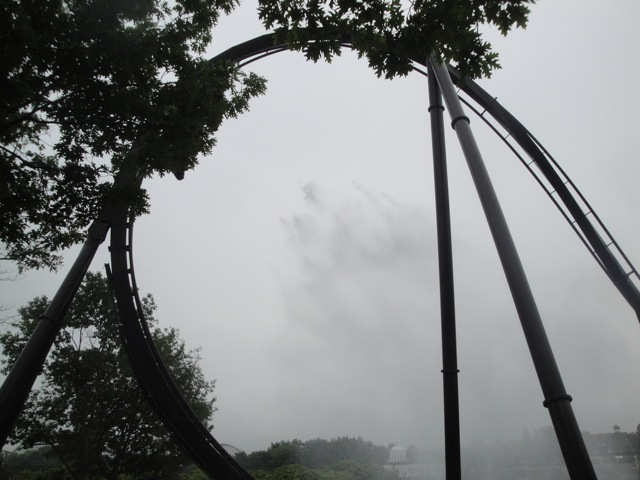
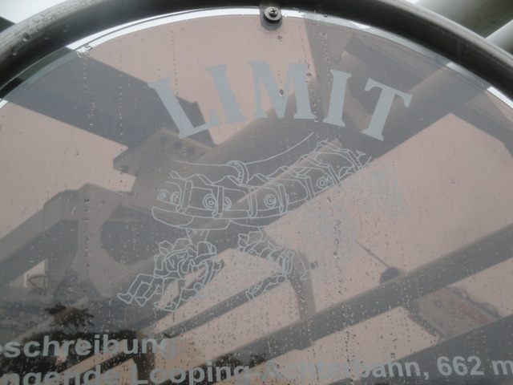
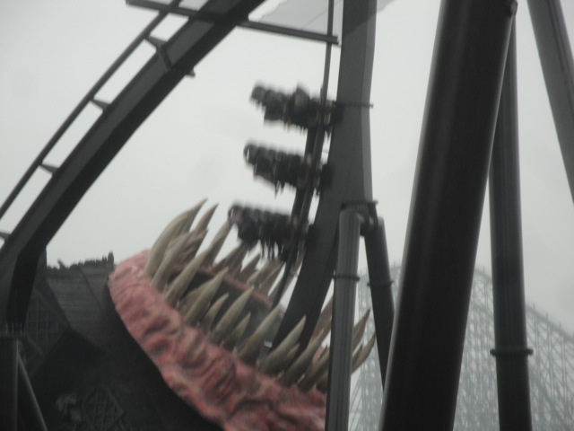
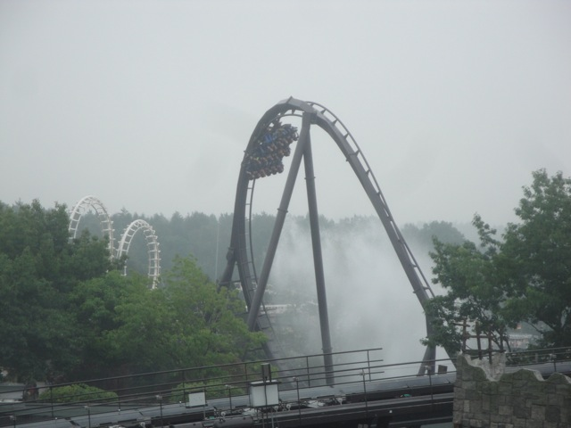
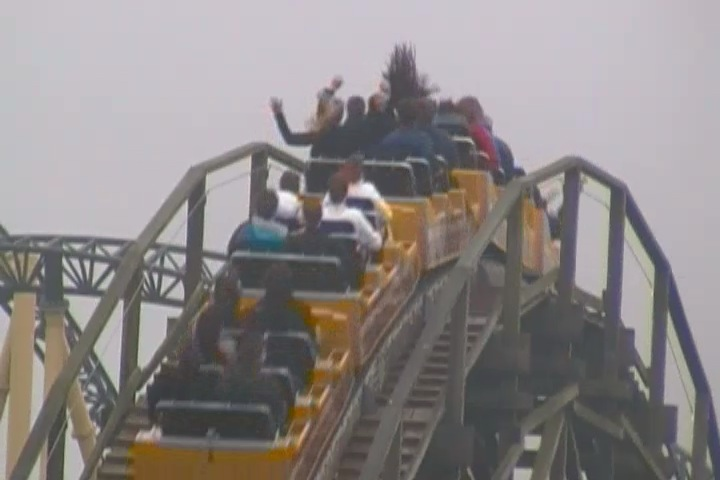
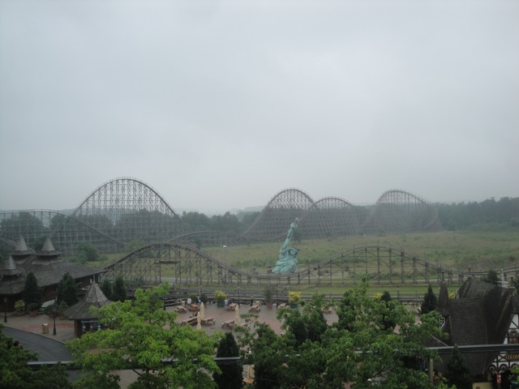
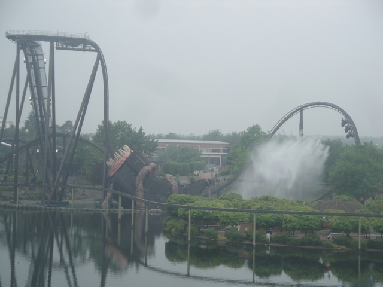
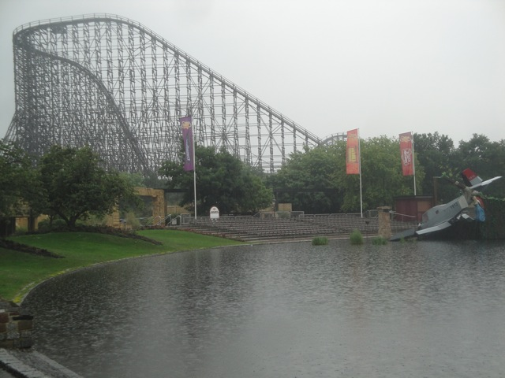

TPR's Mega Europe Trip
Rome Rome Credit Whoring Rainbow Magicland Fiabilandia Mirabilandia
Movieland Studios Gardaland Walygator ParcHoliday ParkEuropa Park
Fort Fun
Heide Park
Schlossbeck
Movie Park Germany Phantasialand
Parc Asterix Disneyland Paris
All right. We have arrived at the very awesome Hotel Port Royal for the night.
No seriously. This place is so well themed that the toilets are well themed.
 Check out the awesome view from our hotel room.
Check out the awesome view from our hotel room.
 Why yes. I would like to start out the morning on Heide Park's newest coaster, Krake.
Why yes. I would like to start out the morning on Heide Park's newest coaster, Krake.

Krake is one of the new B&M Dive Machines.

Yeah. This isn't quite as good as Sheikra.
 But its still a really fun ride and a great fit for Heide Park.
But its still a really fun ride and a great fit for Heide Park.
 Our Morning ERT continued on Desert Race.
Our Morning ERT continued on Desert Race.
 Desert Race was a very interesting ride.
Desert Race was a very interesting ride.
 It was fun and had a lot of twisty bits, but there was just something that felt missing, but I don't quite know what. But hey, its still a really fun ride.
It was fun and had a lot of twisty bits, but there was just something that felt missing, but I don't quite know what. But hey, its still a really fun ride.

Yeah. Lets just get this out of the way.
Hey, you knew that we were gonna ride this sooner or later.
While it wasn't one of the worst SLCs ever, it certainly wasn't one of the best either.
Well since the bobsled isn't on the the parks Flash Pass system, we decided to get that credit out of the way.
Hey, these Mack Bobsleds are really fun rides.
"Is everyone ready to ride!!!?"
 Hey, this bobsled was better than the one at Europa Park.
Hey, this bobsled was better than the one at Europa Park.
Have to head on back to the hotel to grab something quickly. (Yeah. Thats our hotel. Nice, isn't it.)
"Grr. Captain Jack Sparrow wants his beer and he wants it now!!!!"
Ahh crap. Look at that line. Luckily, we don't have to wait that thanks to fast pass. =)
 Yeah. Its good. Really good.
Yeah. Its good. Really good.
All right. Time for us to get yet another credit.
 We were REALLY lucky to have fastpass for this ride since it not only had a long line, but was only running one train.
We were REALLY lucky to have fastpass for this ride since it not only had a long line, but was only running one train.
And hey, it was running well. Smooth as glass.
 What is it with all these European Parks having great powered coasters?
What is it with all these European Parks having great powered coasters?
I see Cliff is going through withdrawls again. We better stop for more beer.
"Hey, it may be wheat beer, but it has alcohol, which is good enough for me."
Hey Ceaser, do you approve of the kiddy coaster?
Hey, the park actually has a really well themed Wild West Area.
 All right. Who's the dumbass who thought it'd be a good idea to ride the log ride in this weather?
All right. Who's the dumbass who thought it'd be a good idea to ride the log ride in this weather?
Where am I again?
Any time I can get a good Duner Kebab, I'm happy.
 Those are the toilets? I think I'll just hold it in.
Those are the toilets? I think I'll just hold it in.
Like most of these European Parks, Heide Park looks REALLY nice!!!
Ooh. Lets all slide down this twisted mess of slides.
Yeah. We're gonna race. Slide in 3...2...1!!!!!
Those rollers hurt my ass SO BAD!!!!!!!!
 Anyone else wanna take another ride on Krake?
Anyone else wanna take another ride on Krake?
 I'm really glad that more B&M Dive Machines are being built as these really are fun rides.
I'm really glad that more B&M Dive Machines are being built as these really are fun rides.

NOM NOM NOM!!!

Yes. The splash really is that high and you just might get wet. =)
The Krake Maze wasn't that scary. Come on guys!!!
 Dude, their drop tower Scream kicks ass.
Dude, their drop tower Scream kicks ass.
Random slide in the middle of the park that we found.
Hmm, looks like all the people from earlier cleared out. (Hmm, now you notice just how strange the Collosus line is in how its built on a slope.)

I spy ejector air. =)
I really wanted to buy one of these little figurines, but I couldn't afford it due to being broke. Plus, it probably would've broke in my suitcase.
All right. We're getting into Flat Ride land. They have a Top Spin, an Enterprise, a Round Up...
And this very bizarre flat ride that was a lot of fun.
Can I please try that!!? Come on, what could possibly go wrong!!!
Yes, I would like to slide down more of these twisted mess of slides.
Basic obstacles to get to the slide.
Warning. Your ass will catch on fire going down these slides.
Why can't any of our local playgrounds have slides like this?

Dude, there are so many shots to get up here.
 All that ejector air looks so beautiful.
All that ejector air looks so beautiful.

Now you should really get an idea of just how big Krake's splash is.
 Even the Big Loop shots are beautiful up here.
Even the Big Loop shots are beautiful up here.
 It looks so pretty.
It looks so pretty.
"Is it me being drunk, or are these things completely pointless?"
 Anyone else wanna take a ride on the Kanalfahrt.
Anyone else wanna take a ride on the Kanalfahrt.
Hey, this stupid boat ride takes us inside the Grottenblitz building. I'm really glad to see Heide Park really taking advantage of all that they've got.
 And now we have Colossus ERT!!!!! =)
And now we have Colossus ERT!!!!! =)
 It's not quite as good as El Toro, but this is still one of the best wooden coasters ever!!!
It's not quite as good as El Toro, but this is still one of the best wooden coasters ever!!!
 I mean, just look at that airtime!!!! =)
I mean, just look at that airtime!!!! =)
Towards the end of our ERT, the sky just opened up and it began to pour down on us.
I got soaked and I loved it. Definetly one of the craziest ERT sessions I've ever experienced.

Yeah, you can see all the rain in this picture.
 And after our insane Colosus in the rain ERT, we went back to the hotel, warmed up, took a shower, and went down for a great dinner the hotel provided for us.
And after our insane Colosus in the rain ERT, we went back to the hotel, warmed up, took a shower, and went down for a great dinner the hotel provided for us.
Whatever you've been drinking, thats where you pee. Funny thing is that I saw a urinal for cocktails, whisky, brandy, coke, wine, wasser, water, but there's no urinal for beer!!! So where does Cliff go!!!?
Schlossbeck
Home